Darahku is an applications to easily help users to find blood donor. The idea started from the frequent broadcast messages someone needs a blood donor. After research, I found that Indonesia deficit 1milion blood bags/year (2016). When emergency, the hospital often runs out of blood supply.
In this project, I worked on everything by myself starting from ideas, market validation, find the solution to solve the problems, and create mockup to high fidelity forms.
For the first step, I create a business model canvas for this project.
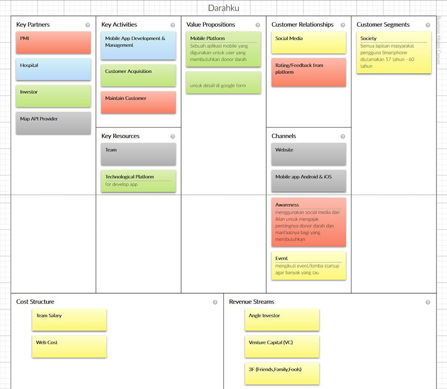
From the lean canvas, I made a list of user requirements that is get blood donors from the closest range, easily communicate with another users. Target of this application is users with age range from 18 to 60
Next from that user requirements i found a solution for this application by searching directly blood donor. Users pick the hospital location, then choose blood type and rhesus type. After that users who want get help wait for another users to response. This application will search from the closest radius.
This is the illustration of the main feature from this application
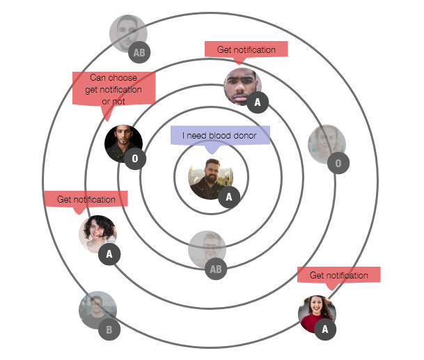
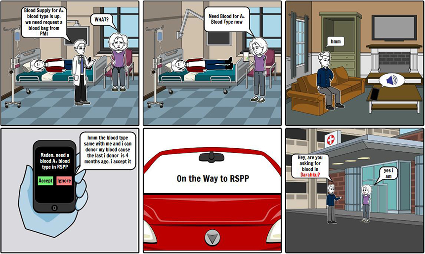
I Create user flowchart to help the users understand when they use the product.
Registration Flow
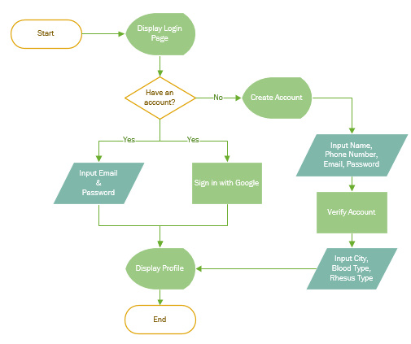
Ask for Help Flow
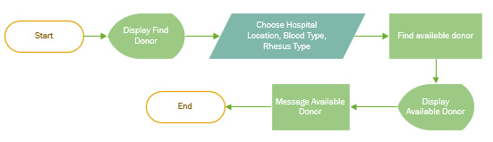
Giving Help Flow
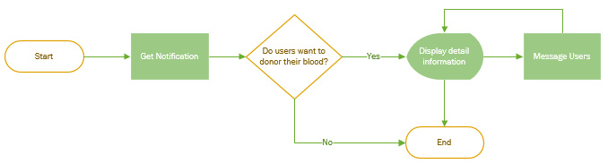
After Create the user flow, I started to create sketches. It's help me to outline the application and visually imagine it.
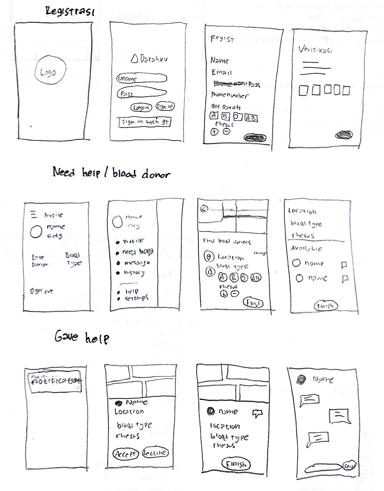
Finally, I create the high fidelity design for this application. I use minimalism and still make the simplicity app. The ultimate goal I use minimalism is to simplify the interfaces and make them more functional and usable. Simple user flows, clear visuals, and forgiving design help create a seamless interaction.
Registration
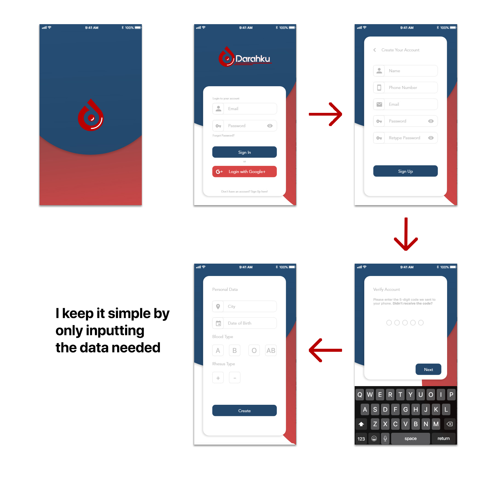
Ask for Help
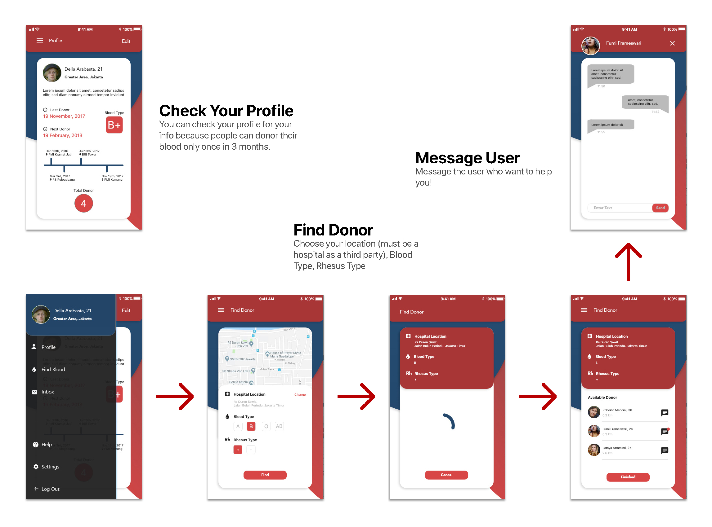
Giving Help
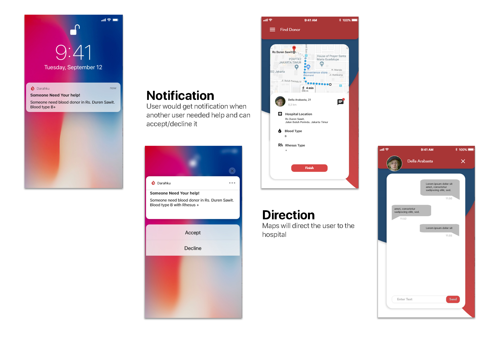
I use red as a main color mix with blue. The red in this application symbolizes the color of blood, the courage of people for donor their blood to help other. And blue in this app represents trust, wisdom, and confidence. for additional color I use black to text and grey,white as neutral color.
For typography i use SF Pro. For Icon i got from the template created by Skyler Westby and flaticon.
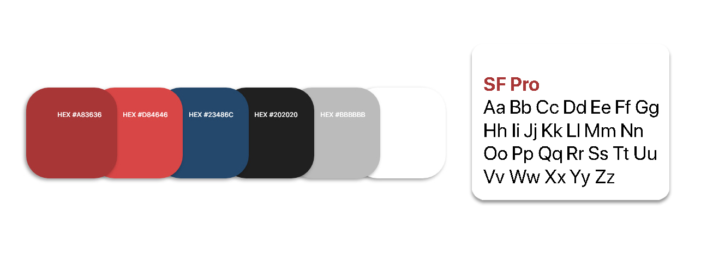
"Darahku" comes from "my blood" means every person in this country is a family and anyone who needs help, we must help them. for logo represent a drop of blood, inside drop of blood there is alphabet "d" from "darahku" and inside "d" there is another drop of blood. it means darahku ready to help people in this country on blood problem. I use red combination with white to symbolizes the color of blood cells and the color of Indonesia.
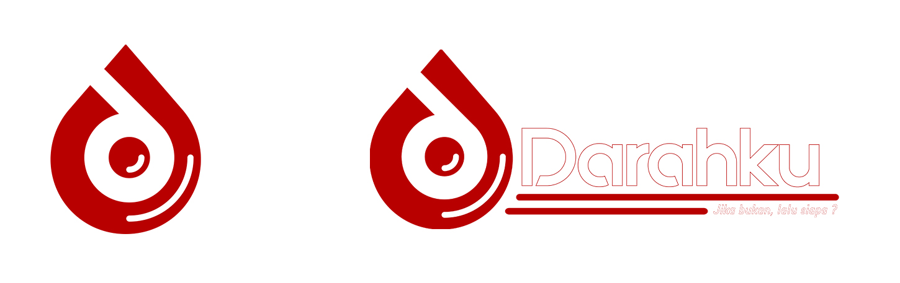
In this project there are obstacles, I am still confused about what can be sold in this application from a business perspective. Then this application is work effective if the fixed user already in a thousand or million. On the other hand, users can donor their blood once in 3months it means there is a potential for users to leave if they no longer need it.
However, I got a lessons from working on this project. To create a product requires a long process. What's next? I think i must deep research about specific feature, Usability test of the prototype with users, Think a comprehensive business model. It is my hope that this app will be supported by PMI or Government
“The Blood You Donate Gives Someone Another Chance At Life. One Day That Someone May Be A Close Relative, A Friend, A Loved One—Or Even You.”